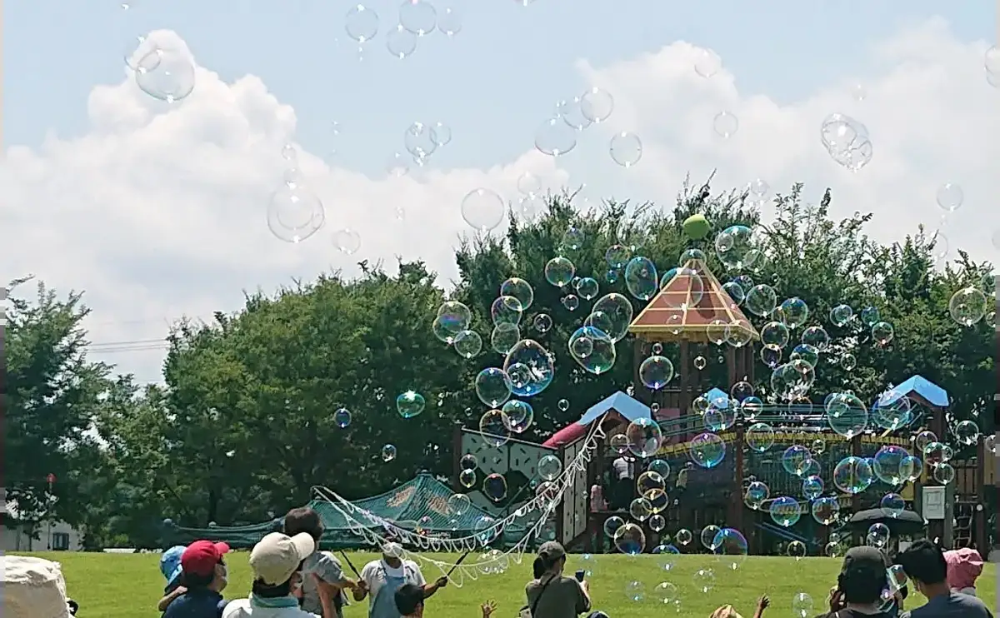
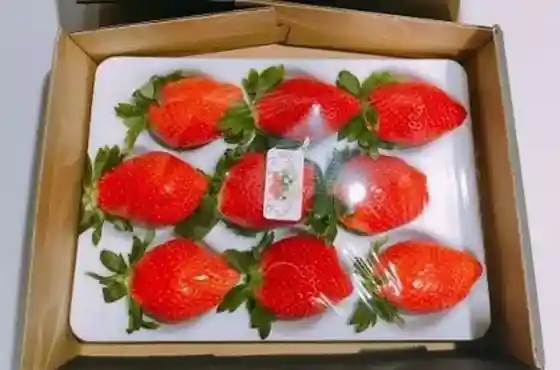
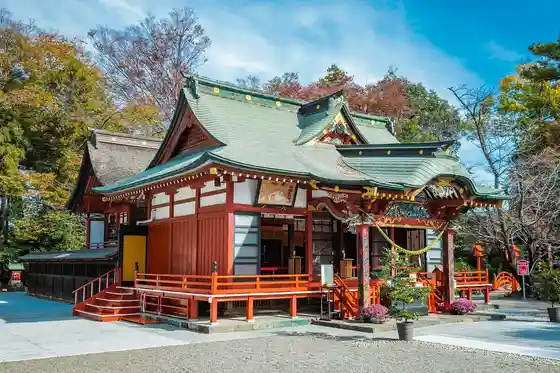
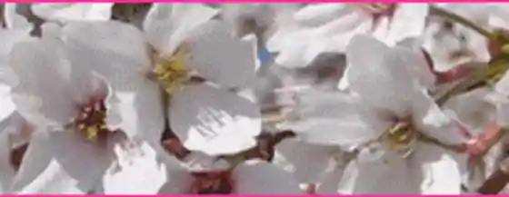
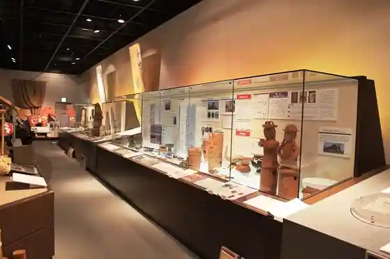

Tamamura
Tamamura · Gunma
Tamamura
Highlighted on the Gunma map.

Sights
Furesshuberii Tamamura

Tamamura Hachiman Shrine

Prefectural Joshidai Mae no Sakura Namiki

Tamamura History Museum

Tamamura Asa City
Roadside Station Tamamura Yado
Tamamura Hokubu Park
Shigeta Ie House